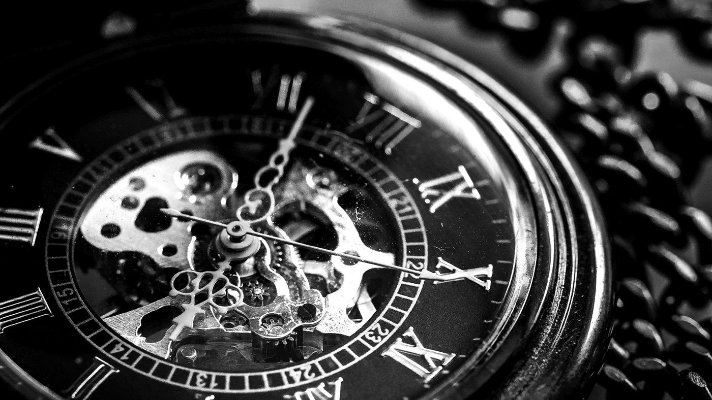

Buying a Pre-Owned Cartier Watch: What to Check Before You Pay
A pre-owned watch can be a smart way into fine watchmaking. Here is how to buy one with confidence.

This article contains affiliate links. If you buy through them, Soie et Or may earn a small commission at no extra cost to you. How this works.
Few watches suit the Parisian wardrobe better than a Cartier. The Tank, with its rectangular case, has been worn by the most stylish people of the last century and still looks modern with a white shirt. The Santos and the Panthère have their own followings. Buying pre-owned can bring these pieces within reach, but it pays to know what you are looking at.
1. Buy from a platform that authenticates
The most important decision is where you buy. Specialist marketplaces and resale platforms that check watches before they ship take most of the risk out of the purchase. Chrono24, the large watch marketplace, offers buyer protection with a secure payment service and the option to have a watch certified. Vestiaire Collective and similar platforms authenticate luxury items before delivery.
2. Ask for box and papers
Original box and papers do not make a watch genuine on their own, but they help with resale and with service history. A watch with its warranty card and purchase documents is usually easier to sell later and may hold its value better.
3. Check the service history
Mechanical watches need servicing. Ask when the watch was last serviced and by whom. A recent service by the brand or a qualified watchmaker is a plus. If there is no history, budget for a service after you buy.
4. Look closely at condition
- Scratches on the case and bracelet are normal. Heavy polishing that softens the edges is less desirable.
- The dial should be clean, with crisp printing and no moisture marks.
- Check that the bracelet fits your wrist, or that extra links are included.
5. Quartz or automatic?
Many classic Cartier models were made with quartz movements. They are accurate, need little care and are often more affordable. Automatic movements appeal to people who love mechanical watchmaking. Both are valid; choose the one that fits how you live.
6. Compare before you commit
Look at several listings of the same model and reference. If one is far cheaper than the rest, there is usually a reason. Ask questions and request extra photos. A good seller will be happy to answer.
A pre-owned watch bought carefully is one of the most rewarding purchases you can make. It is also, quietly, one of the most sustainable.